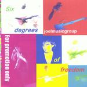

| Artist: | Joelmusicgroup |
| Title: | Six Degrees Of Freedom |
| Label: | self produced |
| Length(s): | 50 minutes |
| Year(s) of release: | 2001 |
| Month of review: | {04/2001] |
| 2) | Round In Circles | 5.05 |
| 3) | In The Name O' The Father | 8.28 |
| 5) | Milton's Tales Of Fall | 5.42 |
| 6) | Invisible Man | 4.42 |
| 8) | Home Free | 8.25 |
The influence of Asia and John Wetton is mostly felt in the vocal parts. Although the music of Joelmusicgroup can be quite thrilly and complex sounding, the vocal parts are usually quite accessible. I like the second track Round In Circles less than the previous track. There are some UK influences in this track, it seems, but the song doesn't really get underway.
In The Name O' The Father is a rather dissonant piece, especially in the keyboard section. The monotonicity in the voice of Joel starts to be noticeable here, a bit the effect Todd Rundgrens have on me. Past halfway, the song takes a turn for the relaxed. The sounds used here have something of violin. Do-it-yourself musicians such as Joel and for instance Rick Ray have the problem that the drumming often is either automatic or lacks groove. For me that makes it difficult to really enjoy the music, because the music doesn't come alive as well as it could.
One of the more succesful tracks on the album is My Inferno. Including lyrical references to David Bowie and King Crimson, the song has a strong vocal melody. I do not really know why, but Milton's Tales Of Fall like much of what has gone before reminds me both of Todd Rundgren and John Wetton. It has to be said that Joel puts more adversity into his music, making it more interesting for us proggers. In this track the bleepy disjoint keyboards contrast with the melancholic vocal lines.
Invisble Man is a bit more bouncy and quircky, but on the whole this is not a very good track. Nice though, how the guitar approaches something akin electric violin.
Crimson Blues brings us first to dissonant riff rock, but the music takes quite a turn then. At the end the Hendrixian riff returns.
The final track, Home Free, opens soothingly. Then the music picks up speed, but halfway the music breaks back into something more romantic, the guitar and the vocal melody might be a bit too trite here.